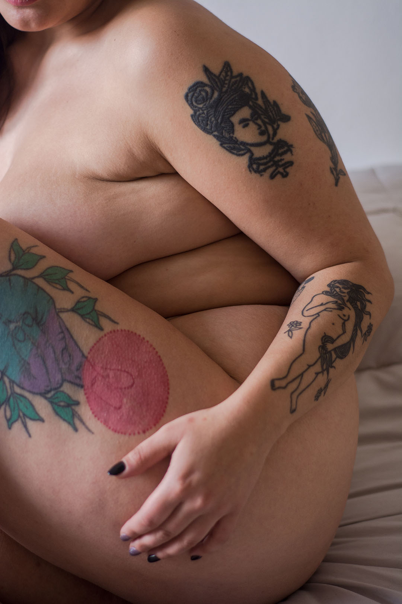

Soy Paloma Laguens tengo 33 años y soy de Córdoba capital. Terminé el secundario en el 2006 y estaba segura de que quería ser médica. Con el paso del tiempo me fui alejando cada vez más de la medicina. Estuve divagando hasta que me cruce con la fotografía y encontré en ese espacio la tranquilidad que buscaba. Me capacité con diferentes cursos que respondían a las necesidades que mi trabajo como fotógrafa me demandaba. En 2017 cursé la Diplomatura en Investigación y Conservación Fotográfica Documental dictada por la UBA a través de la escuela La Lumiere y terminé de formar mi perfil. Actualmente soy Técnica de CONICET para registro de Colecciones Antropológicas en el Instituto de Antropología de Córdoba. Durante la pandemia mi trabajo se encontró totalmente resentido y comencé a trabajar en este proyecto documental sobre cuerpos que venía postergando entre la maternidad y el trabajo. Capacitándome al mismo tiempo con talleres sobre Formulación de Proyectos Artísticos en arte x arte, Antropología e Imagen en aRGra Escuela, Taller de Encuadre Feminista con Marina Sanchez Rial, Residencia Artística Foto y Cuerpo en Fotocreativa BA, entre otros. Actualmente me encuentro cursando la licenciatura en Comunicación Social en la UNC. En todos estos años nunca dejé de usar la fotografía como mi herramienta para comunicarme.